Повний бестіарій мутантів Чорнобильської Зони
Повний список істот, що зазнали радіаційного впливу, аномальних мутацій та біологічних експериментів у лабораторіях Зони:
| Зображення | Назва мутанта | Рівень небезпеки | Характеристика та поведінка |
|---|---|---|---|
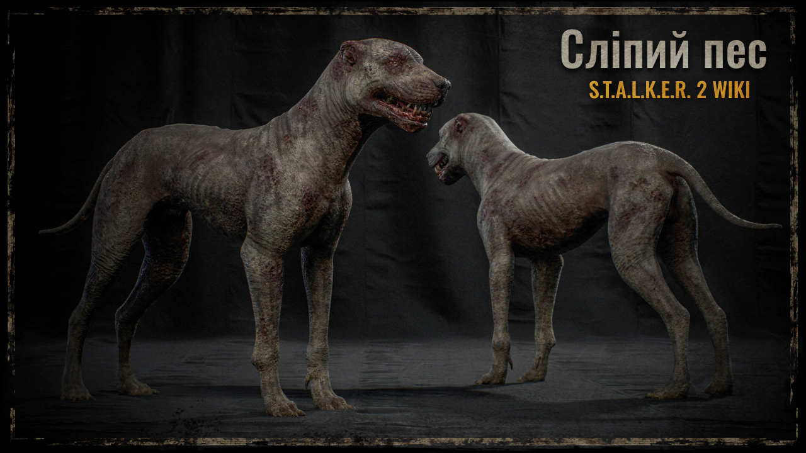 |
Сліпий пес | Низький | Мутовані собаки, що повністю втратили зір, але орієнтуються за чуттям. Небезпечні лише у великих зграях. |
 |
Тушканчик | Низький | Дрібні агресивні мутанти, що живуть у підземеллях. Атакують великим числом і швидко виснажують жертву. |
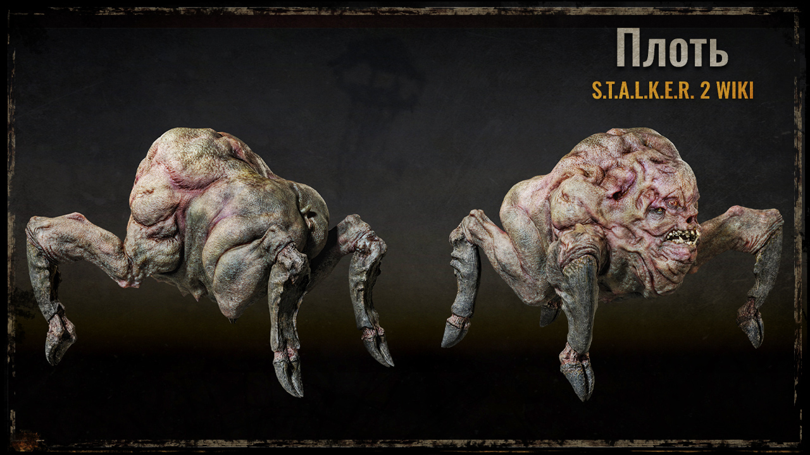 |
Плоть | Низький | Мутована свиня з деформованим тілом і численними очима. Боязка, але атакує загнана у кут. |
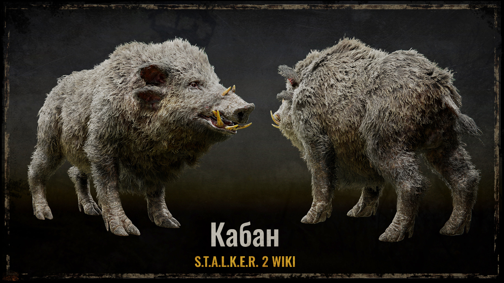 |
Кабан | Середній | Велика та міцна істота. Атакує прямим тараном на високій швидкості. |
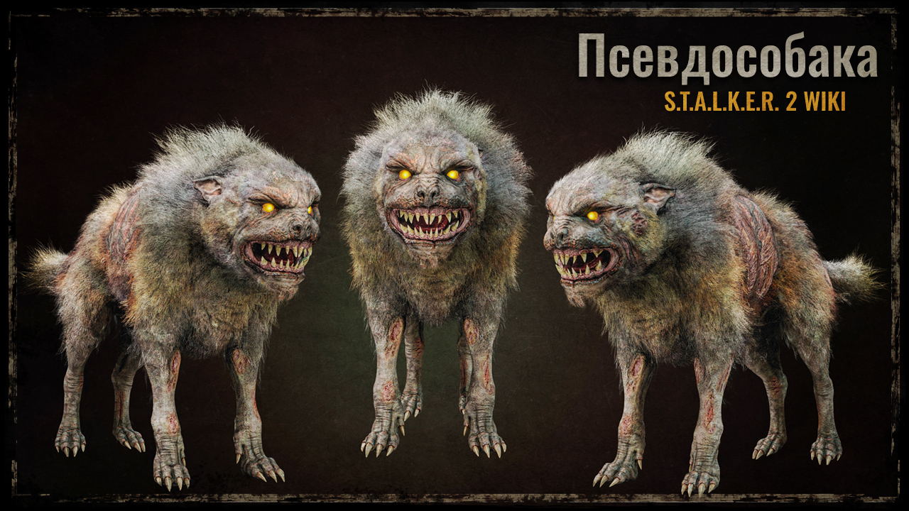 |
Псевдособака | Середній | Небезпечний хижак із сильними щелепами. Набагато агресивніший та витриваліший за сліпого пса. |
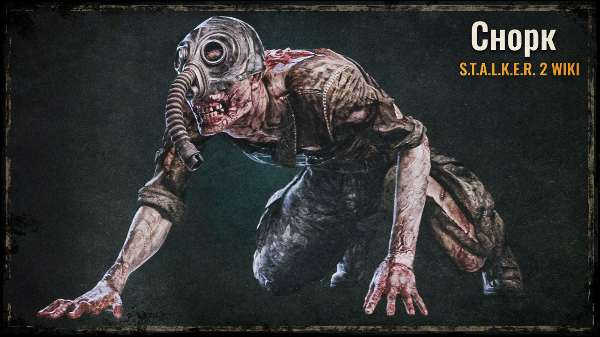 |
Снорк | Середній | Мутовані люди у залишках протигазів та армійського спорядження. Атакують раптовими та довгими стрибками. |
| Псі-собака | Високий | Рідкісний різновид псевдособаки, здатний створювати фантомні двопліки для дезорієнтації ворога. | |
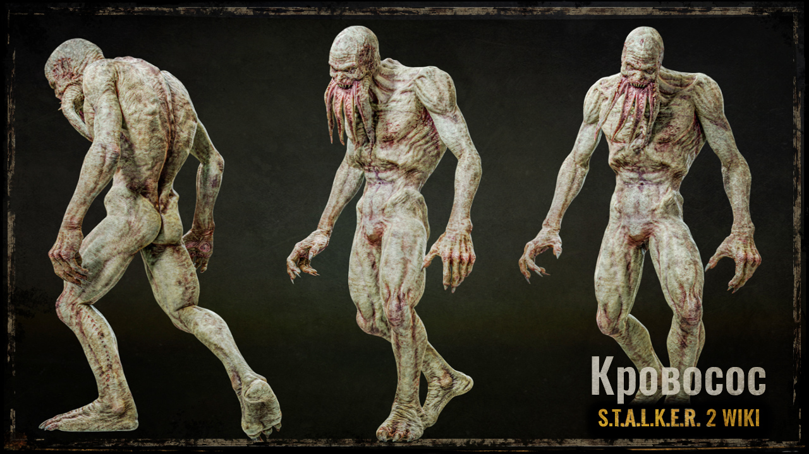 |
Кровосос | Високий | Нічний хижак із щупальцями на обличчі. Вміє ставати практично повністю невидимим під час атаки. |
 |
Бюрер | Високий | Результат генетичних експериментів. Володіє сильним телекінезом, вириває зброю та створює гравітаційний щит. |
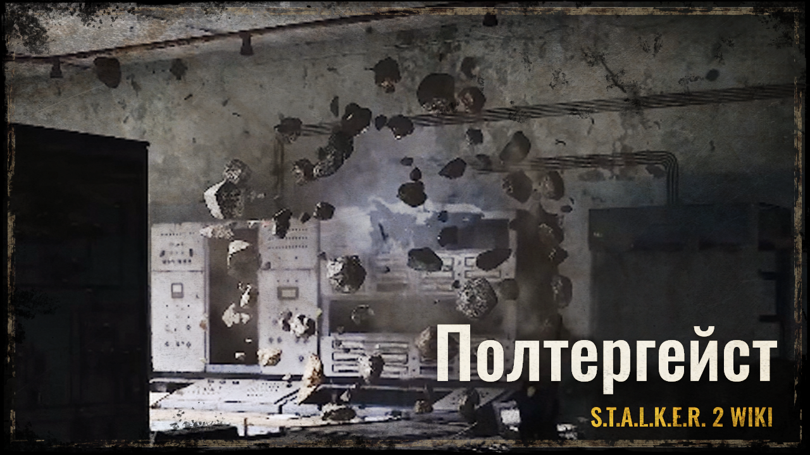 |
Полтергейст | Високий | Безтілесна аномальна істота. Пересувається повітрям, жбурляє важкі предмети або створює вогняні стовпи. |
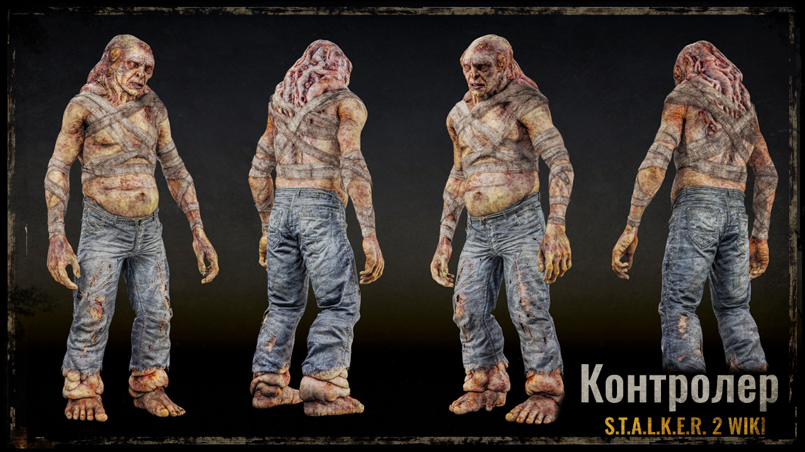 |
Контролер | Дуже високий | Один із найнебезпечніших гуманоїдних мутантів. Атакує потужним ментальним пси-випромінюванням на відстані. |
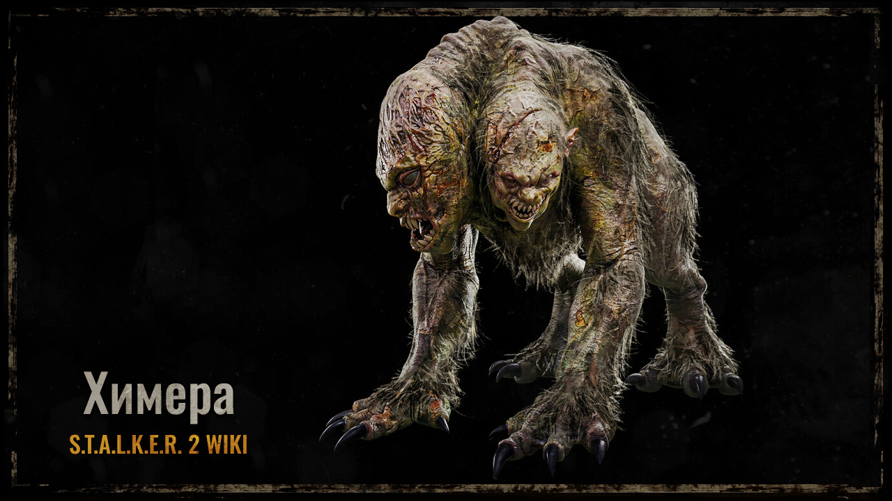 |
Химера | Дуже високий | Двоголовий вершитель харчового ланцюга Зони. Володіє гігантською силою, високою швидкістю та стійкістю. |
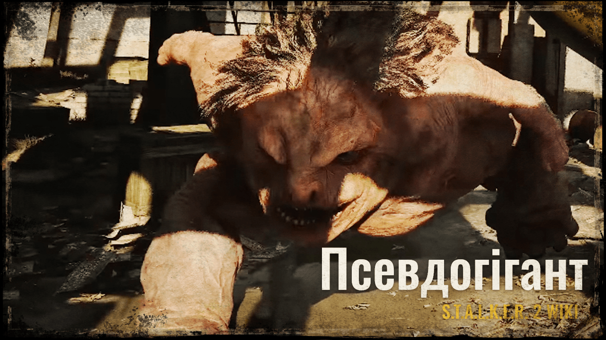 |
Псевдогігант | Критичний | Величезна туша з неймовірно товстою шкірою. Створює потужні сейсмічні ударні хвилі тупотом ноги. |
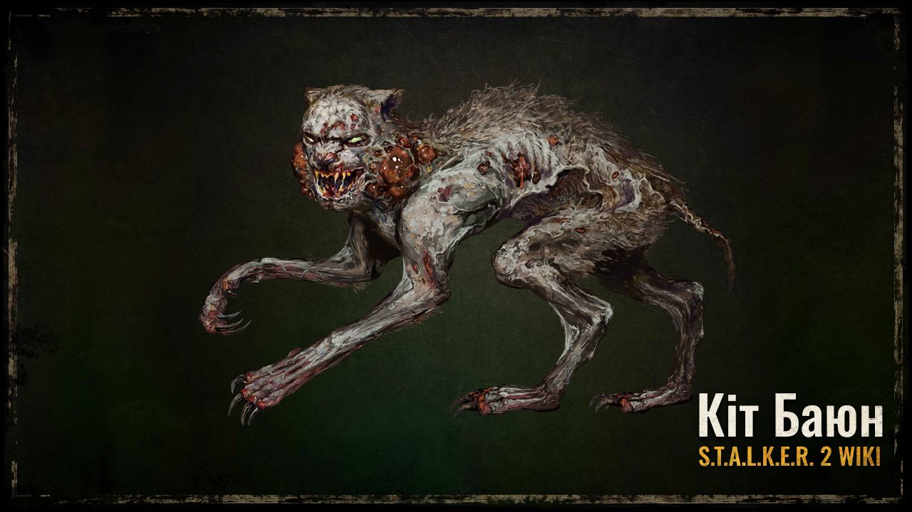 |
Кіт-Баюн | Середній | Мутований кіт, що здатен імітувати звуки (включаючи людський голос чи плач), аби приманити здобич. |